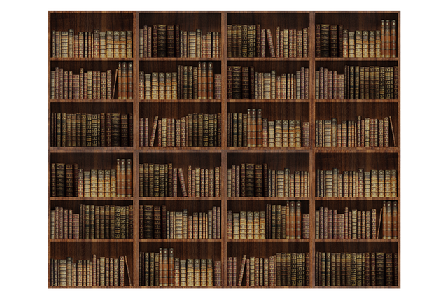
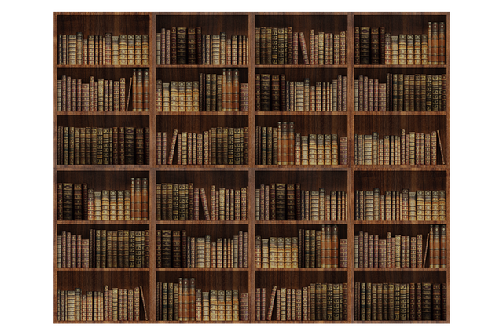

You keep reading and reading, yet nothing sticks in your head?
Perhaps you should see what the Japanese do differently. Instead of
taking another book from the shelf, why not take a look behind the shelf
instead (click on the bookshelf).
➽ click here to continue